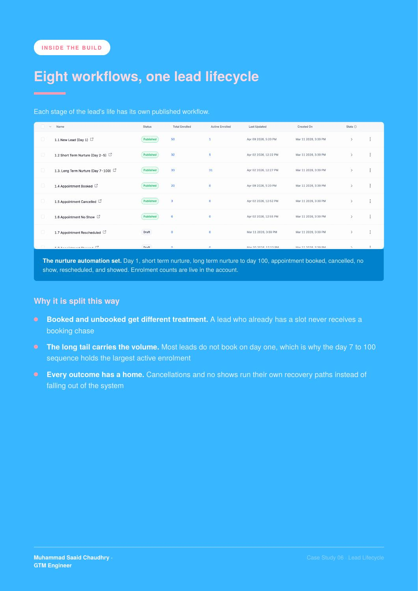

BUILD 06 / GoHighLevel · Meta ads
GHL Lead Flow System
I built a Meta ads to booked appointment flow in GoHighLevel for a clinic, with lead capture, nurture, calendar booking and separate follow-up paths for appointment outcomes.
THE RESULT8 workflows · 132 opportunities
8 workflows, 132 opportunities and A2P 10DLC registration.
01 / THE PROBLEM
What needed fixing
A Meta ad lead still needs follow-up, booking reminders and a clear pipeline. Without a connected process, the team has to manage each step manually.
02 / THE BUILD
What I built
I built a Meta ads to booked appointment flow in GoHighLevel for a clinic, with lead capture, nurture, calendar booking and separate follow-up paths for appointment outcomes.
03 / HOW IT WORKS
- 01Capture Meta ad leads
- 02Run SMS and email nurture
- 03Book and remind
- 04Track outcomes in the pipeline
